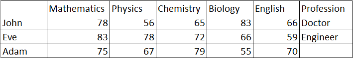
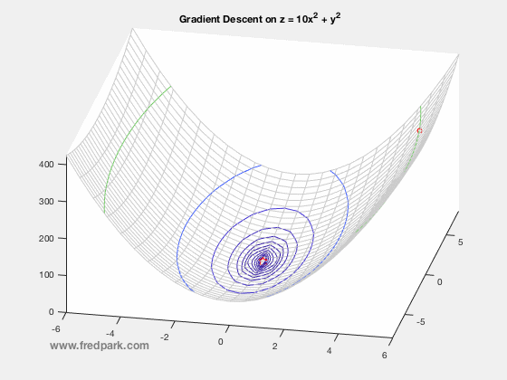
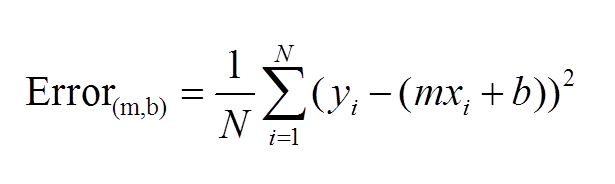
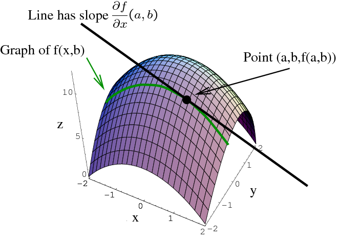
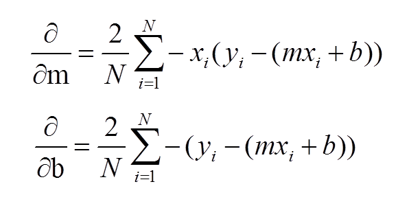

Gradient Descent
A gradient measures how much the output of a function changes if you change the inputs a little bit.
Suppose you have a ball and and a bowl. No matter wherever you slide the ball in the bowl, it will eventually land in the bottom of the bowl.
As you see this ball follows a path that ends at the bottom of the bowl. We can also say that the ball is descending in the bottom of the bowl. As you can see from the image the red lines are gradient of the bowl and the blue line is the path of the ball and as the path of the ball’s slope is decreasing, it is called as gradient descent.
In our machine learning model our goal is to reduce the cost in our input data. the cost function is used to monitor the error in predictions of an ML model. So minimizing this, basically means getting to the lowest error value possible or increasing the accuracy of the model. In short, We increase the accuracy by iterating over a training data set while tweaking the parameters(the weights and biases) of our model.
Let’s us consider we have a dataset of users with their marks in some of the subjects and their occupation. Our goal is to predict the occupation of the person with considering the marks of the person.

In this dataset we have data of John and eve. With the reference data of john and eve, we have to predict the profession of Adam.
Now think of marks in the subject as a gradient and profession as the bottom target. You have to optimise your model so that the result it predicts at the bottom should be accurate. Using John’s and Eve’s data we will create gradient descent and tune our model such that if we enter the marks of john then it should predict result of Doctor in the bottom of gradient and same for Eve. This is our trained model. Now if we give marks of subject to our model then we can easily predict the profession.

In theory this is it for gradient descent, but to calculate and model, gradient descent requires calculus and now we can see importance of calculus in machine learning.
First Let’s start by the topic that you know till now ie. Linear Algebra. Let first use linear algebra and its formula for our model.
The basic formula that we can use in this model is
y = m*x +b where,
y = predictor, m = slope, x = input, b= y-intercept.
A standard approach to solving this type of problem is to define an error function (also called a cost function) that measures how “good” a given line is. This function will take in a (m,b) pair and return an error value based on how well the line fits our data. To compute this error for a given line, we’ll iterate through each (x,y) point in our data set and sum the square distances between each point’s y value and the candidate line’s y value (computed at mx + b). It’s conventional to square this distance to ensure that it is positive and to make our error function differentiable.

Lines that fit our data better (where better is defined by our error function) will result in lower error values. If we minimize this function, we will get the best line for our data. Since our error function consists of two parameters (m and b) we can visualize it as a two-dimensional surface. This is what it looks like for our data set:

Each point in this two-dimensional space represents a line. The height of the function at each point is the error value for that line. You can see that some lines yield smaller error values than others (i.e., fit our data better). When we run gradient descent search, we will start from some location on this surface and move downhill to find the line with the lowest error.
In the essence of calculus video you have seen that to calculate slope, we use differentiation.

To run gradient descent on this error function, we first need to compute its gradient. The gradient will act like a compass and always point us downhill. To compute it, we will need to differentiate our error function. Since our function is defined by two parameters (m and b), we will need to compute a partial derivative for each. These derivatives work out to be:

We now have all the tools needed to run gradient descent. We can initialize our search to start at any pair of m and b values (i.e., any line) and let the gradient descent algorithm march downhill on our error function towards the best line. Each iteration will update m and b to a line that yields slightly lower error than the previous iteration. The direction to move in for each iteration is calculated using the two partial derivatives from above.
The Learning Rate variable controls how large of a step we take downhill during each iteration. If we take too large of a step, we may step over the minimum. However, if we take small steps, it will require many iterations to arrive at the minimum.
While we were able to scratch the surface for learning gradient descent, there are several additional concepts that are good to be aware of that we weren’t able to discuss. A few of these include:
Convexity – In our linear regression problem, there was only one minimum. Our error surface was convex. Regardless of where we started, we would eventually arrive at the absolute minimum. In general, this need not be the case. It’s possible to have a problem with local minima that a gradient search can get stuck in. There are several approaches to mitigate this (e.g., stochastic gradient search).
Convergence – We didn’t talk about how to determine when the search finds a solution. This is typically done by looking for small changes in error iteration-to-iteration (e.g., where the gradient is near zero).